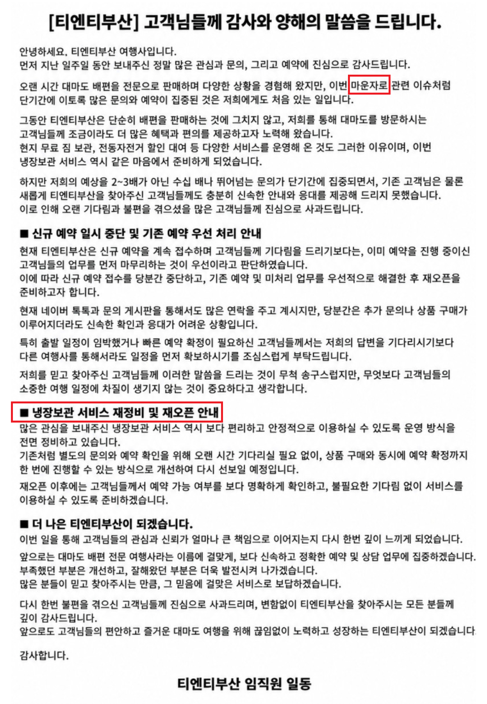

https://gall.dcinside.com/mounjaro/257441
마운자로 코인 달달하게 탑승하겠다 선언 ㅋㅋㅋ

https://gall.dcinside.com/mounjaro/257441
마운자로 코인 달달하게 탑승하겠다 선언 ㅋㅋㅋ
대마도농가 살려야쥬
내 주변에 마운자로 수령 준비하는 지인들도 비행기타고 후쿠오카나 오사카로 다녀오려나 했는데, KTX 부산역 도보거리에 대마도 여객선터미널 있어서 대마도로 간다고 함 ㄷㄷㄷㄷ
근데 일본가서 받아오는게 외화유출도 훨씬 덜된다함 ㅋㅋㅋㅋㅋ 일단 여객선도 한국배에, 선원도 한국선원들이 많아서 한국 내수로 들어가는거고, 외화유출분은 대마도 숙박비+스시자로 비용이 다인데 그게 한국 마운자로 가격보다 싸기때문에
한국서 40주고 사면
일라이릴리한테 30만원 나갈때
일본서 15주고 사면 12만원 나가는식 ㅋㅋㅋ
대마도 한국사람 안받는다 어쩐다 하더니 이제 정신차렷나
생계앞에서 국적이 뭔 소용이겠어? ...
근데 대마도 가서 한국사람들이 하는짓거리 보니까 나도 혐한마렵더라...
생색내는거지
원래부터 한국관광객으로 먹고사는동네임
몇년도에 사냐 ㅋㅋ
택배 회사 대마도 항구로 위치 옮겨야하는거 아니냐 ㅋㅋㅋㅋ
물 들어오는데 노 저어야지 ㅋㅋ 심지어 해운사 잖아 ㅋ